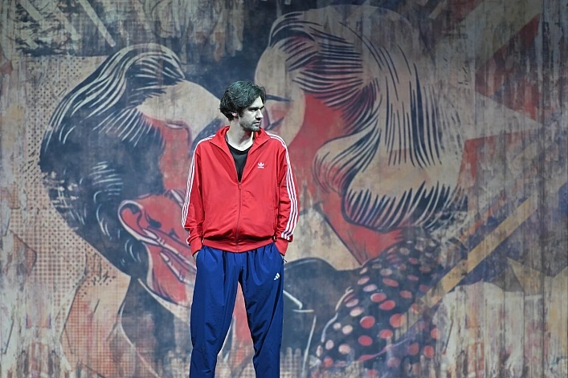
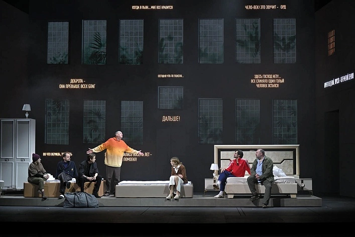
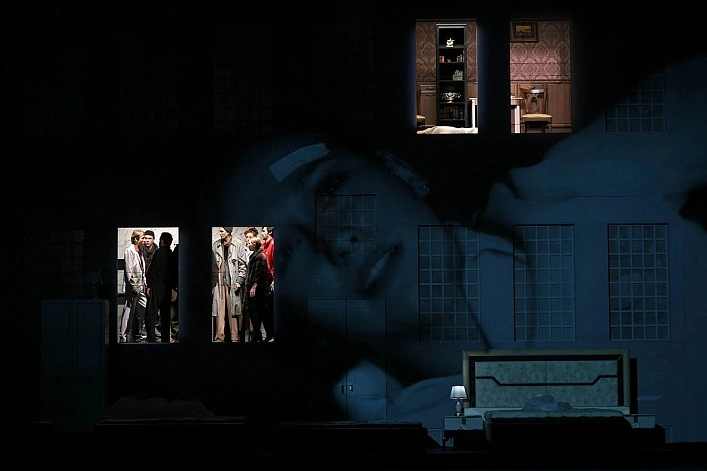
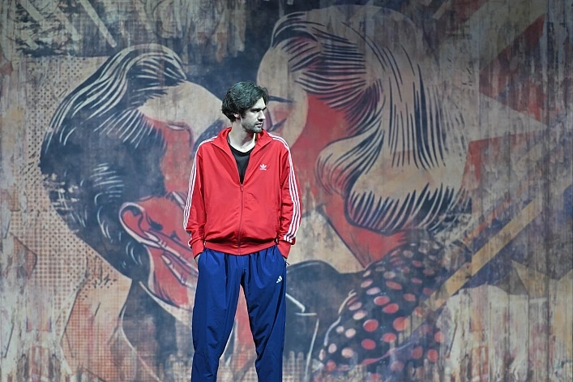
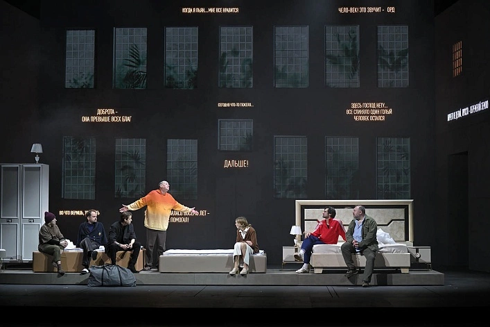
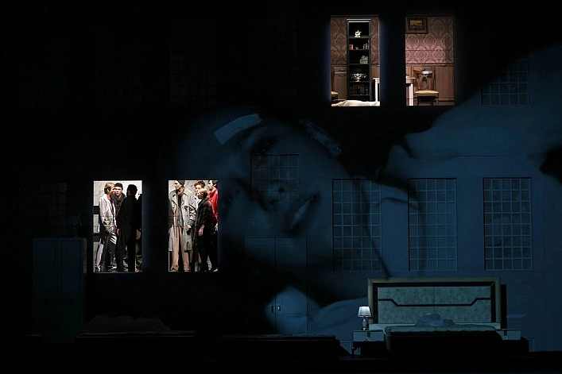

На дне
Горькая правда о жизни на обочине общества
Автор: Максим Горький (по мотивам)
Режиссёр: Никита Кобелев
Премьера: 14 февраля 2025 года
Продолжительность: 3 часа
Жанр: Социальная драма
Классика русской драматургии в современной интерпретации. Ночлежка — зеркало общества. Люди, потерявшие всё, кроме иллюзий. Спектакль о надежде, лжи и правде, которую никто не хочет слышать.
В сообщество опустившихся, потерявших почти всё людей, живущих, можно сказать, «на обочине жизни», попадает странник, незнакомец Лука и своими действиями изменяет, пробуждает к жизни, трансформирует героев этой пьесы, что приводит их в конце к разным итогам. В «На дне» затронуто множество тем, таких как любовь и смерть, правда и ложь, вера в себя и своё призвание, работа и отказ от неё, поиск ориентиров и опор в жизни.
- Лука — Игорь Волков
- Бубнов — Валентин Захаров
- Василиса — Янина Лакоба
- Костылев — Сергей Паршин
- Клещ — Сергей Еликов
- Квашня — Мария Кузнецова
- Пепел — Иван Ефремов
- Актер — Дмитрий Бутеев
- Настя — Мария Лопатина
- Барон — Виктор Шуралев
- Кривой зоб — Владимир Минахин
- Анна — Анна Селедец
- Сатин — Илья Исаев
- Татарин — Виталий Сазонов
- Наташа — Мария Медведева
Санкт-Петербург, площадь Островского, 6